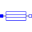

CoreParametersParameter record for core losses |
|
Information
This information is part of the Modelica Standard Library maintained by the Modelica Association.
Parameter record for core losses of induction machines and core losses of DC machines.
Parameters (7)
| m |
Value: Type: Integer Description: Number of phases (1 for DC, 3 for induction machines) |
|---|---|
| PRef |
Value: 0 Type: Power (W) Description: Reference core losses at reference inner voltage VRef |
| VRef |
Value: Type: Voltage (V) Description: Reference inner RMS voltage that reference core losses PRef refer to |
| wRef |
Value: Type: AngularVelocity (rad/s) Description: Reference angular velocity that reference core losses PRef refer to |
| ratioHysteresis |
Value: 0 Type: Real Description: Ratio of hysteresis losses with respect to the total core losses at VRef and fRef |
| GcRef |
Value: if PRef <= 0 then 0 else PRef / VRef ^ 2 / m Type: Conductance (S) Description: Reference conductance at reference frequency and voltage |
| wMin |
Value: 1e-6 * wRef Type: AngularVelocity (rad/s) Description: Angular velocity limit |
Used in Components (12)
|
Modelica.Electrical.Machines.BasicMachines.InductionMachines Induction machine with slipring rotor |
|
|
Modelica.Electrical.Machines.Losses.InductionMachines Model of core losses |
|
|  |
Modelica.Electrical.Machines.Losses.DCMachines Model of core losses |
|
Modelica.Electrical.Machines.Interfaces Partial model for induction machine |
|
|
Modelica.Electrical.Machines.Interfaces Partial model for DC machine |
|
|
Modelica.Electrical.Machines.Utilities.ParameterRecords Common parameters for induction machines |
|
|
Modelica.Electrical.Machines.Utilities.ParameterRecords Common parameters for induction machines with slip ring |
|
|
Modelica.Electrical.Machines.Utilities.ParameterRecords Common parameters for DC machines |
|
|
Modelica.Magnetic.FundamentalWave.BasicMachines.InductionMachines Induction machine with slip ring rotor |
|
|
Modelica.Magnetic.FundamentalWave.BaseClasses Base model of machines |
|
|
Modelica.Magnetic.QuasiStatic.FundamentalWave.BasicMachines.InductionMachines Induction machine with slip ring rotor |
|
|
Modelica.Magnetic.QuasiStatic.FundamentalWave.BaseClasses Base model of machines |